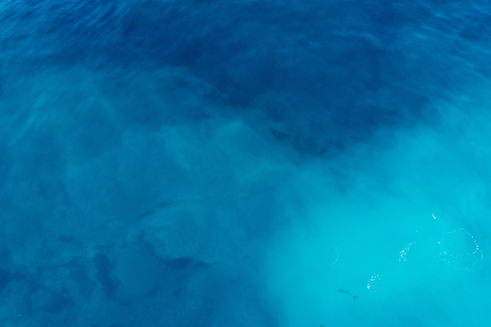

- • Permenkes RI No. 2 Tahun 2023 resmi mencabut dan menggantikan Permenkes 492/2010 dan Permenkes 32/2017.
- • Parameter Total Dissolved Solids (TDS) untuk air minum ditegaskan dengan standar ketat guna menjamin sterilitas sel tubuh.
- • Kadar Besi (Fe) dan Mangan (Mn) pada air sumur bor di Bandung rata-rata melampaui batas toleransi 0.2 - 0.4 mg/L jika tanpa proses filtrasi.
- • Solusi teruji menggunakan kombinasi Multimedia FRP Deironizer + Commercial Reverse Osmosis (RO).
1. Latar Belakang Perubahan Regulasi Air Minum Nasional
Pada tahun 2023, Kementerian Kesehatan Republik Indonesia mengesahkan Peraturan Menteri Kesehatan No. 2 Tahun 2023 tentang Peraturan Pelaksanaan Peraturan Pemerintah Nomor 66 Tahun 2014 tentang Kesehatan Lingkungan. Regulasi ini menyatukan dan memperketat standar pengawasan media air minum maupun air keperluan higiene sanitasi.
Bagi para pemilik hotel, restoran, pabrik makanan minuman (F&B), rumah sakit, dan perumahan di Bandung dan sekitarnya, pemahaman terhadap aturan ini sangat vital agar fasilitas operasional tidak menghadapi kendala sertifikasi higienis maupun risiko kesehatan konsumen.
“Air yang jernih secara kasat mata belum tentu aman diminum. Parameter mikroskopis seperti padatan terlarut (TDS), logam berat, dan bakteri anaerob hanya bisa dipastikan melalui pengujian laboratorium berkala.”
2. Parameter Fisik & Kimia Kritis yang Wajib Diwaspadai
Berdasarkan pengalaman lapangan tim PT Noto Water Envirotech sejak 1995 di ratusan titik instalasi Jawa Barat, berikut tiga kendala paling umum:
- Total Dissolved Solids (TDS): Jumlah ion mineral terlarut. Untuk air minum langsung (*direct drinking*), TDS ideal berada di bawah 15-50 ppm agar metabolisme ginjal bekerja optimal.
- Besi (Fe) & Mangan (Mn): Air tanah di Bandung yang kaya formasi vulkanik sering kali membawa kandungan Fe > 1.5 mg/L (batas aman Permenkes adalah 0.2 mg/L). Gejalanya adalah air jernih saat keluar kran namun menguning dan berbau besi menyengat setelah diendapkan beberapa jam.
- Total Coliform & E. Coli: Wajib 0 CFU/100ml. Air baku tanah yang berjarak dekat dengan septic tank sering terkontaminasi bakteri patogen.
3. Tabel Komparasi: Air Baku Bandung vs Standar Permenkes
Komparasi Baku Mutu Air Minum vs Kondisi Air Sumur Bandung
4. Rekomendasi Teknologi Purifikasi NOTO
Untuk mencapai kepatuhan standar baku mutu tanpa pemborosan energi dan biaya bahan kimia, NOTO menerapkan pendekatan rekayasa multi-tahap (*multi-barrier approach*):
- Pre-Treatment Multimedia: Tabung FRP berisi pasir silika dan Manganese Greensand Plus untuk mengoksidasi dan menyaring endapan besi/mangan.
- Activated Carbon Polishing: Karbon aktif beriodin tinggi untuk menyerap residu klorin, bau, rasa asing, dan senyawa organik.
- Reverse Osmosis (RO) Membrane: Membran semipermeabel berpori 0.0001 mikron yang memisahkan padatan terlarut, logam berat, virus, dan bakteri.
- Ultraviolet (UV) Sterilizer: Pemaparan sinar UV 254 nm sebelum titik kran air untuk proteksi sekunder bebas kuman patogen.
5. Kesimpulan & Cara Memeriksa Kualitas Air Anda
Memenuhi standar air minum bukan sekadar formalitas hukum, melainkan perlindungan aset dan reputasi bisnis Anda. Jangan berspekulasi dengan kesehatan keluarga atau mutu produk manufaktur Anda.
Berpengalaman lebih dari 28 tahun sejak 1995 di Bandung dalam perancangan sistem Water Treatment Plant (WTP), Reverse Osmosis, dan IPAL ramah lingkungan. Hubungi kami untuk jadwal survei teknis di seluruh Jawa Barat.